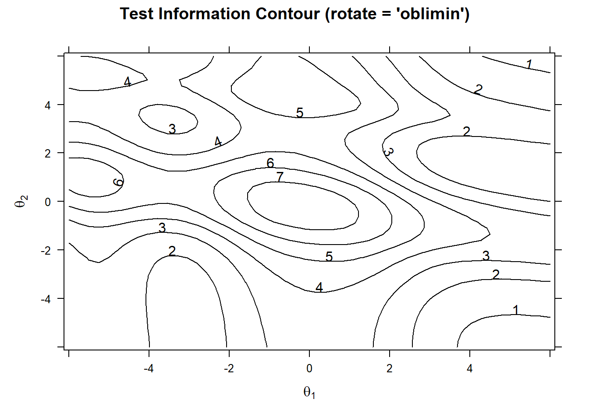
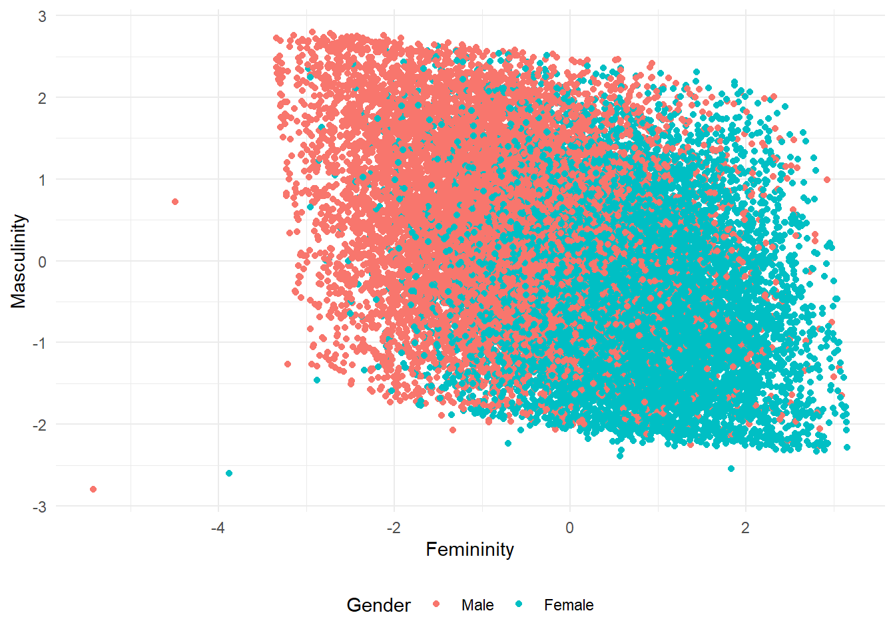

![]()
Attaching package: 'dplyr'The following objects are masked from 'package:stats':
filter, lagThe following objects are masked from 'package:base':
intersect, setdiff, setequal, unionThis post focuses on multidimensioanl IRT (mIRT) as an exploratory factor analysis method on likert scale data. It is a continuation of the previous post, which was about exploratory factor analysis (EFA) with common factoring using polychoric correlations. The data utilized in the two posts are identical. We also compare factor scores obtained from both mIRT and EFA models.
November 20, 2024
Can we use multidimensional IRT (mIRT) for exploratory factor detection? What is the relation between EFA and mIRT? In fact, EFA is designed to work with continuous observed variables. And, in many cases, researchers use likert type scales to measure psychological constructs. So, that kind of discrete data may not be so suitable for EFA. However, Takane & Leeuw (1987) put forward that there is a relationship between IRT and EFA. That’s why the answer to the question is: Yes, IRT can be used for factor detection, both confirmatory and exploratory.
Today, we will delve into the use of mIRT for exploratory factor analysis. The data we will use is the same as the one used in the previous post called “Exploratory Factor Analysis with Likert Scale Data”. So, you can check the preprocessing section of that post to see how we filtered the data.
Also, in the previous post, we have a detailed discussion about the number of the factors that can be extracted from this data. That’s why we are going to skip scree plots, K1, and parallel analysis in this post. I suggest seeing the previous post for those issues.
The following code is also provided in the previous post. It is used to load the data and filter the participants based on their demographics. Let’s just run the same code to get the data ready for the analysis. If you are coming from the previous post, this code is already run. So, you can skip this part.
Attaching package: 'dplyr'The following objects are masked from 'package:stats':
filter, lagThe following objects are masked from 'package:base':
intersect, setdiff, setequal, unionJust to remember how the data is distributed, let’s see the summary and structure of the data. Remember that we have already discarded items 21 and 43 to avoid multicollinearity because they have high correlation with items 8 and 27 consecutively.
summary(df[ ,1:5]) # run summary(df) to see all items. Q1 Q2 Q3 Q4 Q5
Min. :0.000 Min. :0.00 Min. :0 Min. :0.000 Min. :0.000
1st Qu.:1.000 1st Qu.:2.00 1st Qu.:1 1st Qu.:2.000 1st Qu.:1.000
Median :1.000 Median :5.00 Median :3 Median :4.000 Median :3.000
Mean :2.023 Mean :3.76 Mean :3 Mean :3.281 Mean :2.972
3rd Qu.:3.000 3rd Qu.:5.00 3rd Qu.:5 3rd Qu.:5.000 3rd Qu.:4.000
Max. :5.000 Max. :5.00 Max. :5 Max. :5.000 Max. :5.000 str(df)'data.frame': 26334 obs. of 42 variables:
$ Q1 : int 1 1 1 1 1 1 1 1 1 1 ...
$ Q2 : int 4 1 4 1 5 1 5 5 3 5 ...
$ Q3 : int 1 4 5 5 1 1 5 1 5 5 ...
$ Q4 : int 5 4 1 4 5 5 5 5 5 5 ...
$ Q5 : int 2 5 4 5 1 5 5 1 2 4 ...
$ Q6 : int 5 4 4 1 5 5 4 5 5 5 ...
$ Q7 : int 1 5 5 5 1 3 1 3 1 2 ...
$ Q8 : int 5 5 4 2 5 4 1 4 3 4 ...
$ Q9 : int 1 4 5 5 1 5 3 1 2 3 ...
$ Q10: int 4 2 1 3 5 4 2 3 2 1 ...
$ Q11: int 1 1 3 2 1 5 2 3 1 1 ...
$ Q12: int 5 4 1 1 5 2 1 4 1 5 ...
$ Q13: int 5 4 2 1 1 3 1 1 1 1 ...
$ Q14: int 5 2 5 2 5 2 5 2 1 4 ...
$ Q15: int 1 4 5 5 1 5 5 3 2 5 ...
$ Q16: int 1 2 1 1 5 1 5 1 5 5 ...
$ Q17: int 1 5 1 5 1 2 2 1 1 4 ...
$ Q18: int 5 2 4 3 1 3 5 5 3 3 ...
$ Q19: int 1 2 1 3 1 1 5 1 4 2 ...
$ Q20: int 5 3 4 4 5 1 4 5 1 5 ...
$ Q22: int 5 4 1 4 5 2 3 4 5 5 ...
$ Q23: int 4 2 5 2 1 3 4 3 4 3 ...
$ Q24: int 5 4 1 1 5 1 3 5 2 2 ...
$ Q25: int 1 5 4 2 1 3 4 1 1 1 ...
$ Q26: int 5 2 3 2 5 1 5 1 4 5 ...
$ Q27: int 1 4 4 5 1 5 5 1 1 5 ...
$ Q28: int 5 4 1 3 5 1 4 4 1 4 ...
$ Q29: int 1 1 1 1 1 3 5 1 5 1 ...
$ Q30: int 5 1 2 2 5 1 3 5 5 4 ...
$ Q31: int 1 5 1 4 1 3 1 1 5 4 ...
$ Q32: int 5 4 1 5 5 1 1 5 1 4 ...
$ Q33: int 1 5 3 3 1 2 4 1 2 3 ...
$ Q34: int 5 5 4 4 5 1 3 1 5 5 ...
$ Q35: int 1 4 5 2 1 5 5 1 5 5 ...
$ Q36: int 3 2 3 1 5 1 1 4 3 4 ...
$ Q37: int 1 1 5 5 1 4 4 1 5 3 ...
$ Q38: int 5 4 4 1 5 1 1 3 5 5 ...
$ Q39: int 1 2 2 1 1 5 5 1 5 5 ...
$ Q40: int 4 3 4 3 5 1 5 2 3 5 ...
$ Q41: int 1 4 4 5 1 4 5 1 5 4 ...
$ Q42: int 5 1 5 2 5 1 2 4 1 2 ...
$ Q44: int 5 3 4 1 5 1 5 5 5 4 ...In this post, we are going to build 2-factor model as all the previous analyses suggest that 2-factor model is the best fit for this data. The factors are defined as Masculinity and Femininity by the origibal authors of the scale.
Note on Item Selection
The item selection processes for both mIRT and EFA are described in the literature strictly, although subjectivity within the boundaries of these definitions may still exist. In other words, although most decisions will be the same, there may be some differences among psychometricians in terms of selecting/discarding an item. One psychometrician might select an item while another might not. And, both might have their logical reasons. The reasoning behind selecting/discarding items might depend on both statistics and knowledge of construct that is being assessed. Thus, although I am not an expert in gender roles, I wanted this post to be a personal experiment to check if I can extract the same factors and items as the original authors. So, I avoided checking the items in the original scale developed by the authors. See the documentation of the scale for the original items here.
Let’s build the model with the mirt package.
Call:
mirt(data = df, model = 2, itemtype = "graded", method = "EM",
verbose = FALSE)
Full-information item factor analysis with 2 factor(s).
Converged within 1e-04 tolerance after 236 EM iterations.
mirt version: 1.42
M-step optimizer: BFGS
EM acceleration: Ramsay
Number of rectangular quadrature: 31
Latent density type: Gaussian
Log-likelihood = -1590607
Estimated parameters: 293
AIC = 3181800
BIC = 3184196; SABIC = 3183265
G2 (1e+10) = 2645146, p = 1
RMSEA = 0, CFI = NaN, TLI = NaNThe `mirt() is a function built in the mirt package to build multidimensional IRT models. It takes a dataframe, number of factors, IRT model, method etc. In our model, we use the prominent Graded Response Model (GRM) that is suitable for Likert scale ordinal data. “EM”, which stands for “Expectation-Maximization”, is the default estimation method and suggested for models with less than 3 factors. The verbose = FALSE argument is used to suppress the output of the function after each iteration cycle.
With the coef() function of mirt package, we can get the item parameters such as discrimination and difficulty.
item_params <- coef(model_1, simplify = TRUE)$items
print(head(item_params)) # run print(item_params) to see all items. a1 a2 d1 d2 d3 d4
Q1 0.5428696 -0.87427291 7.469361 -0.4101088 -0.9383750 -1.53030916
Q2 -1.3926877 0.10494528 7.617294 1.9428222 1.4265050 0.99922695
Q3 0.3767874 -1.84457406 8.098128 1.1101457 0.4213897 -0.18057288
Q4 -1.2437652 -0.22953251 6.872875 1.8390821 0.9332445 0.06892971
Q5 0.2059426 -0.98529256 6.896770 1.1428991 0.4112459 -0.30738685
Q6 -0.3865773 0.04663095 6.864864 2.3255300 1.4584706 0.64351628
d5
Q1 -2.80068782
Q2 0.08154265
Q3 -1.33340228
Q4 -1.21175535
Q5 -1.40389522
Q6 -0.52337385In the case of factor analysis with MIRT, discrimination parameters are referred as the slope of the item characteristic surface (ICS). a1 is the slope of the item on Factor 1, while a2 is the slope of the item on Factor 2. Positive or negative values indicate the direction and strength of the relationship between the item and the respective factor.
d1, d2, d3, d4 and d5 are the difficulty parameters of the items. They are also called as the threshold parameters. They represent the intercepts of the item for each category in the likert scale. Thresholds should increase monotonically (d1 > d2 > d3 > …) for well-functioning items. Non-monotonic thresholds suggest problems with item performance. To detect these items, we can use the following function. It is expected to print the index of problematic items.
check_monotonic <- function(data) {
d_columns <- data[, grepl("^d\\d+$", names(data))]
non_monotonic <- logical(nrow(d_columns))
for (i in seq_len(nrow(d_columns))) {
non_monotonic[i] <- any(diff(as.numeric(d_columns[i, ])) < 0)
}
which(non_monotonic)
}
check_monotonic(item_params)integer(0)The output is null, suggesting all the items have monotonic thresholds.
The summary() function provides us with the factor loadings and the communalities (h2) of the variables. The default rotation method is oblimin. Therfore, we provide rotate = "none" in the function. Below the factor loadings, we can see the explained variance by each factor. The first factor explains %17.6 of the variance, while the second factor explains %10.8. Also, the correlation between the factors seems to be zero. Oblique rotations (e.g., oblimin) allow factors to be correlated, providing these estimates directly. As we set the rotation to none, the correlation between the factors is not calculated. Yet, we will get the correlation scores after we apply a rotation.
summary(model_1, rotate = "none")
Unrotated factor loadings:
F1 F2 h2
Q1 0.2729 -0.439568 0.2677
Q2 -0.6326 0.047666 0.4024
Q3 0.1485 -0.726795 0.5503
Q4 -0.5865 -0.108245 0.3558
Q5 0.1041 -0.498283 0.2591
Q6 -0.2214 0.026708 0.0497
Q7 0.2366 -0.400577 0.2164
Q8 -0.4228 0.126203 0.1947
Q9 0.3049 -0.576922 0.4258
Q10 -0.2790 0.051659 0.0805
Q11 0.1865 -0.215908 0.0814
Q12 -0.5260 0.171620 0.3061
Q13 0.4317 -0.091842 0.1948
Q14 -0.5978 -0.035233 0.3586
Q15 0.0794 -0.610298 0.3788
Q16 -0.6210 0.050615 0.3882
Q17 0.1866 -0.542158 0.3288
Q18 -0.3000 -0.082622 0.0968
Q19 0.4003 -0.276375 0.2366
Q20 -0.6201 0.163312 0.4112
Q22 -0.5505 0.050788 0.3056
Q23 0.0277 -0.341561 0.1174
Q24 -0.4089 0.102879 0.1778
Q25 0.3163 -0.396559 0.2573
Q26 -0.5752 -0.007970 0.3310
Q27 0.1348 -0.523084 0.2918
Q28 -0.5349 0.021320 0.2866
Q29 0.1100 -0.583130 0.3521
Q30 -0.5607 0.042580 0.3162
Q31 0.4048 -0.284227 0.2447
Q32 -0.3573 0.095665 0.1368
Q33 0.4155 -0.185081 0.2069
Q34 -0.5225 0.054848 0.2760
Q35 0.1540 -0.588756 0.3704
Q36 -0.5778 0.047455 0.3361
Q37 0.2797 -0.314347 0.1771
Q38 -0.6441 -0.015461 0.4151
Q39 0.1609 -0.744320 0.5799
Q40 -0.5856 -0.025633 0.3436
Q41 0.1618 -0.362005 0.1572
Q42 -0.5156 -0.000675 0.2659
Q44 -0.6280 0.000000 0.3943
SS loadings: 7.399 4.525
Proportion Var: 0.176 0.108
Factor correlations:
F1 F2
F1 1
F2 0 1Before we apply a rotation, we need to check communalities to be over 0.30 just as it is in EFA. Communalities do not change after rotation, so we can discard the items with communalities below 0.30 at this stage. Here is the code to print the communalities below 0.3:
communalities <- data.frame(value = model_1@Fit[["h2"]])
low_communalities <- communalities[communalities$value < 0.3, , drop = FALSE]
# print ordered by communality value:
print(low_communalities[order(low_communalities$value), , drop = FALSE]) value
Q6 0.04973608
Q10 0.08049372
Q11 0.08140447
Q18 0.09683406
Q23 0.11743292
Q32 0.13679041
Q41 0.15723452
Q37 0.17705607
Q24 0.17778655
Q8 0.19465828
Q13 0.19482647
Q33 0.20685832
Q7 0.21643984
Q19 0.23662033
Q31 0.24466433
Q25 0.25733267
Q5 0.25913279
Q42 0.26588832
Q1 0.26771912
Q34 0.27603944
Q28 0.28656914
Q27 0.29178386Items with low communality values can be discarded from the dataset. To do that, run the following code:
[1] "Q1" "Q5" "Q6" "Q7" "Q8" "Q10" "Q11" "Q13" "Q18" "Q19" "Q23" "Q24"
[13] "Q25" "Q27" "Q28" "Q31" "Q32" "Q33" "Q34" "Q37" "Q41" "Q42"Now, using the df_final, we can build our final solution:
model_2 <- mirt(df_final, 2, itemtype = 'graded', method = 'EM', verbose = FALSE)
model_2
Call:
mirt(data = df_final, model = 2, itemtype = "graded", method = "EM",
verbose = FALSE)
Full-information item factor analysis with 2 factor(s).
Converged within 1e-04 tolerance after 184 EM iterations.
mirt version: 1.42
M-step optimizer: BFGS
EM acceleration: Ramsay
Number of rectangular quadrature: 31
Latent density type: Gaussian
Log-likelihood = -752201.4
Estimated parameters: 139
AIC = 1504681
BIC = 1505818; SABIC = 1505376
G2 (1e+10) = 968649.2, p = 1
RMSEA = 0, CFI = NaN, TLI = NaNLet’s see the factor loadings for the final solution. If we need to, we can apply a rotation later on:
summary(model_2, rotate = "none")
Unrotated factor loadings:
F1 F2 h2
Q2 0.605 0.0369 0.368
Q3 -0.148 -0.7520 0.587
Q4 0.575 -0.1099 0.343
Q9 -0.297 -0.5812 0.426
Q12 0.511 0.1587 0.286
Q14 0.634 -0.0172 0.402
Q15 -0.078 -0.5531 0.312
Q16 0.624 0.0593 0.393
Q17 -0.183 -0.5115 0.295
Q20 0.596 0.1708 0.385
Q22 0.541 0.0636 0.297
Q26 0.593 0.0153 0.351
Q29 -0.109 -0.6068 0.380
Q30 0.542 0.0504 0.296
Q35 -0.145 -0.5846 0.363
Q36 0.577 0.0392 0.334
Q38 0.651 -0.0059 0.424
Q39 -0.159 -0.7813 0.636
Q40 0.630 -0.0200 0.397
Q44 0.611 0.0000 0.374
SS loadings: 4.777 2.872
Proportion Var: 0.239 0.144
Factor correlations:
F1 F2
F1 1
F2 0 1The factor loadings and communalities of the final solution looks fine. The explained variance by each factor is %23.9 and %14.4, respectively. This suggests an increase in the explained variance by the factors when compared to the initial model. Now, we can apply a rotation to see the correlation of the factors.
summary(model_2, rotate = "oblimin")
Rotation: oblimin
Rotated factor loadings:
F1 F2 h2
Q2 0.6020 -0.01689 0.368
Q3 0.0252 0.77249 0.587
Q4 0.6058 0.13388 0.343
Q9 -0.1646 0.59058 0.426
Q12 0.4781 -0.14616 0.286
Q14 0.6431 0.04007 0.402
Q15 0.0496 0.56925 0.312
Q16 0.6158 -0.03944 0.393
Q17 -0.0663 0.52252 0.295
Q20 0.5618 -0.15568 0.385
Q22 0.5310 -0.04682 0.297
Q26 0.5941 0.00498 0.351
Q29 0.0308 0.62368 0.380
Q30 0.5345 -0.03308 0.296
Q35 -0.0107 0.59951 0.363
Q36 0.5724 -0.02029 0.334
Q38 0.6576 0.02896 0.424
Q39 0.0204 0.80238 0.636
Q40 0.6397 0.04283 0.397
Q44 0.6164 0.02147 0.374
Rotated SS loadings: 4.572 3.009
Factor correlations:
F1 F2
F1 1.000
F2 -0.257 1The correlation between the factors is -0.26 after the rotation. This is a good result as it is not too high to suggest a single factor solution, nor too low to suggest a completely independent factor solution.
To see model’s fit indices, we can use M2() of mirt:
M2(model_2) M2 df p RMSEA RMSEA_5 RMSEA_95 SRMSR TLI
stats 5090.389 71 0 0.05181388 0.05061086 0.05302509 0.03886059 0.914146
CFI
stats 0.9445851The model fit indices are suggesting a good model fit. RMSEA and SRMSR values are below 0.08 and TLI and CFI are above 0.90. These values are considered as good fit indices for a model.
The MIRT package provides with 3D plotting options. We can use the plot() and itemplot() functions to see the 3D plots of the model. We can also implement rotation to see the rotated model’s plot.
We can also check for item trace plots. Let’s see the first item’s trace plot for final model without rotation and with rotation:
We can also draw a plot to see the test information. Test information is a measure of the precision of the test at different levels of the latent traits. In multidimensional models we need to produce a contour plot.
We can plot the test information with the following code:
plot(model_2, rotate = "oblimin" ,type="infocontour") 
The test is most effective (provides the highest precision) in the central regions where test information is high (contour values like 6 or 7). Meaning the test is most effective for around 0 thetas of both factors. At the edges of the plot, the test is less precise (values like 1 or 2), meaning the test is less effective at distinguishing individuals with very high or very low abilities in those dimensions.
We are solid that our data has 2 factors, with each variable loading to a single factor. These factors were named as Femininity and Masculinity in the original scale.
These are the factors and their variables.
| Femininity | Masculinity |
|---|---|
| Q2 I have thought about dying my hair. | Q3 I have thrown knives, axes or other sharp things. |
| Q4 I give people handmade gifts. | Q9 I like guns. |
| Q12 I use lotion on my hands. | Q15 I have thought it would be exciting to be an outlaw. |
| Q14 I dance when I am alone. | Q17 I have considered joining the military. |
| Q16 When I was a child, I put on fake concerts and plays with my friends. | Q29 I have burned things up with a magnifying glass. |
| Q20 I sometimes feel like crying when I get angry. | Q35 I have taken apart machines just to see how they work. |
| Q22 I save the letters I get. | Q39 I have set fuels, aerosols or other chemicals on fire, just for fun. |
| Q26 I jump up and down in excitement sometimes. | |
| Q30 I think horoscopes are fun. | |
| Q36 I take lots of pictures of my activities. | |
| Q38 I leave nice notes for people now and then. | |
| Q40 I really like dancing. | |
| Q44 I decorate my things (e.g. stickers on laptop). |
Finally, we can extract the factor scores of the persons. These scores can be used in further analyses such as regression, clustering, etc.
F1 F2
[1,] 1.9183653 -2.0882425
[2,] -0.5932079 0.4430873
[3,] -0.3261666 0.7950392
[4,] -1.4358888 0.6969259
[5,] 3.1571670 -2.2801150
[6,] -2.3165436 1.3256648As we did in EFA in the previous post, we can use these factor scores in a scree plot with genders of the participants. Let’s see the plot:
library(ggplot2)
mirt_scores <- fscores(model_2)
colnames(mirt_scores) <- c("Femininity", "Masculinity")
scores <- as_tibble(mirt_scores)
scores <- bind_cols(df_with_demographics |> select(gender), scores) |>
filter(gender %in% c(1, 2)) |>
mutate(gender = factor(gender, labels = c("Male", "Female")))
# Plot the filtered data
scores |>
ggplot(aes(Femininity, Masculinity, color = gender)) +
geom_point() +
theme_minimal() +
theme(legend.position = "bottom") +
labs(color = "Gender")
In my opinion this plot’s being parallelogram-like is interesting. The same plot in EFA was more like a rectangle, although both distributions are similar.
It is also a good idea to check the correlation between the factor scores obtained from mIRT and EFA.
Let’s build the EFA model again:
library(psych)
df_EFA <- df %>% select(
-Q6, -Q11, -Q10, -Q18, -Q23, -Q32, -Q37, -Q41,
-Q24, -Q8, -Q13, -Q33, -Q7, -Q19, -Q31, -Q42,
-Q25, -Q34, -Q28, -Q5, -Q1, -Q12, -Q27, -Q30, -Q22
)
poly_matrix <- polychoric(df_EFA)$rho
two_fm <- fa(poly_matrix, nfactors = 2, fm = "pa", rotate = "oblimin", cor = "poly", SMC=FALSE)Remember that although the items selected by EFA and IRT are very similar, they are not identical. We can compare the items selected by both methods:
mirt_items<-colnames(df_final)
efa_items<-colnames(df_EFA)
all_items <- unique(c(mirt_items, efa_items))
comparison <- data.frame(
mirt_items = ifelse(all_items %in% mirt_items, all_items, ""),
efa_items = ifelse(all_items %in% efa_items, all_items, "")
)
print(comparison) mirt_items efa_items
1 Q2 Q2
2 Q3 Q3
3 Q4 Q4
4 Q9 Q9
5 Q12
6 Q14 Q14
7 Q15 Q15
8 Q16 Q16
9 Q17 Q17
10 Q20 Q20
11 Q22
12 Q26 Q26
13 Q29 Q29
14 Q30
15 Q35 Q35
16 Q36 Q36
17 Q38 Q38
18 Q39 Q39
19 Q40 Q40
20 Q44 Q44So items 12, 22, and 30 are selected by IRT model but they are not selected by EFA model.
Now let’s have a look at the correlation between factor scores obtained from mIRT and EFA models:
efa_scores <- factor.scores(df_EFA, two_fm)$scores
colnames(efa_scores) <- c("Femininity_efa", "Masculinity_efa")
cor(mirt_scores, efa_scores) Femininity_efa Masculinity_efa
Femininity 0.9741479 -0.3107335
Masculinity -0.3301980 0.9873525The participants’ scores obtained from MIRT and EFA models are highly correlated. The correlation between the femininity scores is 0.98, while the correlation between the masculinity scores is 0.99. This suggests that the factor scores obtained from both models are very similar.
In this post, we worked on how to run multidimensional Item Response Theory based exploratory factor analysis on likert scale data. We used the mirt package in R to build the model. We also compared the factor scores obtained from the mIRT model with the factor scores obtained from the EFA model, which was discussed in my previous post. The results suggest that the factor scores from both models are highly correlated. Also, the mIRT model has shown great fit, even better than EFA model. These findings supports the opinion that as EFA is designed to work on continuous data, mIRT is a good alternative for factor detection in likert scale data.
Both my EFA and mIRT models have similar items to the original scale. However, the scales are not identical. The original scale contains 10 items for each factor. The difference occurs because of the variation in our approaches in two ways:
I discarded two items because they are highly correlated with other two items, pointing to multicollinearity issues. It wasn’t done on the original scale. This might be because the authors might not have this issue in their original data. This difference probably resulted in the alternation in the item selection processes.
The preferred rotation method is different in the original scale. Although this shouldn’t make an effect on item selection for the factors, the participants’ factor scores might slightly alter. I used oblimin rotation while the original authors used varimax. The varimax is usually preferred when factors are independent of each other (no correlation between factors). The aim of varimax rotation is to maximize the variance of the squared loadings. Thus, it creates a simpler structure and encourages each variable to load strongly on one factor and weakly on others. Assuming the factors (Femininity and Masculinity) are independent of each other, the original authors might have used varimax rotation. In my personal opinion, these two factors could be considered as correlated negatively. That’s why I used oblimin rotation. Yet, as I mentioned before, I am not an expert on gender roles. So, I might be wrong in this assumption. In a real case study, I would definitely consult with an expert in the field to decide on the rotation method.
---
title: "Multidimensional IRT for Factor Exploration"
description: |
This post focuses on multidimensioanl IRT (mIRT) as an exploratory factor analysis method on likert scale data. It is a continuation of the previous post, which was about exploratory factor analysis (EFA) with common factoring using polychoric correlations. The data utilized in the two posts are identical. We also compare factor scores obtained from both mIRT and EFA models.
author:
- name: Ali Emre Karagül
orcid: 0000-0002-5820-8643
email: aliemrekaragul@gmail.com
affiliations:
- name: TOBB ETU- University of Economics & Technology
date: 2024-11-20
categories: [dplyr, ggplot2, mirt, psych
]
image: "image.png"
output:
self_contained: false
code_folding: false
---
## Introduction
Can we use multidimensional IRT (mIRT) for exploratory factor detection? What is the relation between EFA and mIRT? In fact, EFA is designed to work with continuous observed variables. And, in many cases, researchers use likert type scales to measure psychological constructs. So, that kind of discrete data may not be so suitable for EFA. However, [Takane & Leeuw (1987)](https://link.springer.com/article/10.1007/BF02294363 "ON THE RELATIONSHIP BETWEEN ITEM RESPONSE THEORY AND FACTOR ANALYSIS OF DISCRETIZED VARIABLES") put forward that there is a relationship between IRT and EFA. That's why the answer to the question is: Yes, IRT can be used for factor detection, both confirmatory and exploratory.
Today, we will delve into the use of mIRT for exploratory factor analysis. The data we will use is the same as the one used in [the previous post](https://emrekaragul.com/posts/efaWithLikertData-1/) called "Exploratory Factor Analysis with Likert Scale Data". So, you can check the preprocessing section of that post to see how we filtered the data.
Also, in the previous post, we have a detailed discussion about the number of the factors that can be extracted from this data. That's why we are going to skip scree plots, K1, and parallel analysis in this post. I suggest seeing the previous post for those issues.
## Understand the data
The following code is also provided in the previous post. It is used to load the data and filter the participants based on their demographics. Let's just run the same code to get the data ready for the analysis. If you are coming from the previous post, this code is already run. So, you can skip this part.
```{r eval=TRUE, echo=TRUE, code_folding=FALSE, warning=FALSE}
#| warning: false
#| eval: true
#| echo: true
#| code-fold: false
library(dplyr)
data <- read.delim("data.csv")
df_with_demographics <- data %>%
filter(engnat == 1) %>%
filter(hand == 1) %>%
filter(age >= 18 & age <= 30) %>%
filter(source == 1)
df <- df_with_demographics %>% select(1:44)
df <- df %>% select(-Q21, -Q43)
```
Just to remember how the data is distributed, let's see the summary and structure of the data. Remember that we have already discarded items 21 and 43 to avoid multicollinearity because they have high correlation with items 8 and 27 consecutively.
```{r eval=TRUE, echo=TRUE, code_folding=FALSE, warning=FALSE}
#| warning: false
#| eval: true
#| echo: true
#| code-fold: false
summary(df[ ,1:5]) # run summary(df) to see all items.
str(df[ ,1:5]) # run str(df) to see all items.
```
## Multidimensional IRT Model Building
### Initial Model
In this post, we are going to build 2-factor model as all the previous analyses suggest that 2-factor model is the best fit for this data. The factors are defined as *Masculinity* and *Femininity* by the origibal authors of the scale.
::: callout-note
Note on Item Selection
The item selection processes for both mIRT and EFA are described in the literature strictly, although subjectivity within the boundaries of these definitions may still exist. In other words, although most decisions will be the same, there may be some differences among psychometricians in terms of selecting/discarding an item. One psychometrician might select an item while another might not. And, both might have their logical reasons. The reasoning behind selecting/discarding items might depend on both statistics and knowledge of construct that is being assessed. Thus, although I am not an expert in gender roles, I wanted this post to be a personal experiment to check if I can extract the same factors and items as the original authors. So, **I avoided checking the items in the original scale developed by the authors.** See the documentation of the scale for the original items [here.](https://openpsychometrics.org/tests/OSRI/development/ "documentation")
:::
Let's build the model with the `mirt` package.
```{r eval=TRUE, echo=TRUE, code_folding=FALSE, warning=FALSE}
#| warning: false
#| eval: true
#| echo: true
#| code-fold: false
library(mirt)
model_1 <- mirt(df, 2, itemtype = 'graded', method = 'EM', verbose = FALSE)
model_1
```
The \``mirt()` is a function built in the mirt package to build multidimensional IRT models. It takes a dataframe, number of factors, IRT model, method etc. In our model, we use the prominent Graded Response Model (GRM) that is suitable for Likert scale ordinal data. "EM", which stands for "Expectation-Maximization", is the default estimation method and suggested for models with less than 3 factors. The `verbose = FALSE` argument is used to suppress the output of the function after each iteration cycle.
With the `coef()` function of mirt package, we can get the item parameters such as discrimination and difficulty.
```{r eval=TRUE, echo=TRUE, code_folding=FALSE, warning=FALSE}
#| warning: false
#| eval: true
#| echo: true
#| code-fold: false
item_params <- coef(model_1, simplify = TRUE)$items
print(head(item_params)) # run print(item_params) to see all items.
```
In the case of factor analysis with MIRT, discrimination parameters are referred as the slope of the item characteristic surface (ICS). `a1` is the slope of the item on Factor 1, while `a2` is the slope of the item on Factor 2. Positive or negative values indicate the direction and strength of the relationship between the item and the respective factor.
`d1`, `d2`, `d3`, `d4` and `d5` are the difficulty parameters of the items. They are also called as the threshold parameters. They represent the intercepts of the item for each category in the likert scale. Thresholds should increase monotonically (d1 \> d2 \> d3 \> ...) for well-functioning items. Non-monotonic thresholds suggest problems with item performance. To detect these items, we can use the following function. It is expected to print the index of problematic items.
```{r eval=TRUE, echo=TRUE, code_folding=FALSE, warning=FALSE}
#| warning: false
#| eval: true
#| echo: true
#| code-fold: false
check_monotonic <- function(data) {
d_columns <- data[, grepl("^d\\d+$", names(data))]
non_monotonic <- logical(nrow(d_columns))
for (i in seq_len(nrow(d_columns))) {
non_monotonic[i] <- any(diff(as.numeric(d_columns[i, ])) < 0)
}
which(non_monotonic)
}
check_monotonic(item_params)
```
The output is null, suggesting all the items have monotonic thresholds.
The `summary()` function provides us with the factor loadings and the communalities (h2) of the variables. The default rotation method is oblimin. Therfore, we provide `rotate = "none"` in the function. Below the factor loadings, we can see the explained variance by each factor. The first factor explains %17.6 of the variance, while the second factor explains %10.8. Also, the correlation between the factors seems to be zero. Oblique rotations (e.g., oblimin) allow factors to be correlated, providing these estimates directly. As we set the rotation to none, the correlation between the factors is not calculated. Yet, we will get the correlation scores after we apply a rotation.
```{r eval=TRUE, echo=TRUE, code_folding=FALSE, warning=FALSE}
#| warning: false
#| eval: true
#| echo: true
#| code-fold: false
summary(model_1, rotate = "none")
```
Before we apply a rotation, we need to check communalities to be over 0.30 just as it is in EFA. Communalities do not change after rotation, so we can discard the items with communalities below 0.30 at this stage. Here is the code to print the communalities below 0.3:
```{r eval=TRUE, echo=TRUE, code_folding=FALSE, warning=FALSE}
#| warning: false
#| eval: true
#| echo: true
#| code-fold: false
communalities <- data.frame(value = model_1@Fit[["h2"]])
low_communalities <- communalities[communalities$value < 0.3, , drop = FALSE]
# print ordered by communality value:
print(low_communalities[order(low_communalities$value), , drop = FALSE])
```
### Final Model
Items with low communality values can be discarded from the dataset. To do that, run the following code:
```{r eval=TRUE, echo=TRUE, code_folding=FALSE, warning=FALSE}
#| warning: false
#| eval: true
#| echo: true
#| code-fold: false
discard_these_items <- rownames(low_communalities)
print(discard_these_items)
df_final <- df %>% select(-discard_these_items)
```
Now, using the `df_final`, we can build our final solution:
```{r eval=TRUE, echo=TRUE, code_folding=FALSE, warning=FALSE}
#| warning: false
#| eval: true
#| echo: true
#| code-fold: false
model_2 <- mirt(df_final, 2, itemtype = 'graded', method = 'EM', verbose = FALSE)
model_2
```
Let's see the factor loadings for the final solution. If we need to, we can apply a rotation later on:
```{r eval=TRUE, echo=TRUE, code_folding=FALSE, warning=FALSE}
#| warning: false
#| eval: true
#| echo: true
#| code-fold: false
summary(model_2, rotate = "none")
```
The factor loadings and communalities of the final solution looks fine. The explained variance by each factor is %23.9 and %14.4, respectively. This suggests an increase in the explained variance by the factors when compared to the initial model. Now, we can apply a rotation to see the correlation of the factors.
```{r eval=TRUE, echo=TRUE, code_folding=FALSE, warning=FALSE}
#| warning: false
#| eval: true
#| echo: true
#| code-fold: false
summary(model_2, rotate = "oblimin")
```
The correlation between the factors is -0.26 after the rotation. This is a good result as it is not too high to suggest a single factor solution, nor too low to suggest a completely independent factor solution.
### Model Fit
To see model's fit indices, we can use `M2()` of mirt:
```{r eval=TRUE, echo=TRUE, code_folding=FALSE, warning=FALSE}
#| warning: false
#| eval: true
#| echo: true
#| code-fold: false
M2(model_2)
```
The model fit indices are suggesting a good model fit. RMSEA and SRMSR values are below 0.08 and TLI and CFI are above 0.90. These values are considered as good fit indices for a model.
### Visualization
The MIRT package provides with 3D plotting options. We can use the `plot()` and `itemplot()` functions to see the 3D plots of the model. We can also implement rotation to see the rotated model's plot.
#### Expected Total Score Plot
```{r eval=TRUE, echo=TRUE, code_folding=FALSE, warning=FALSE}
#| warning: false
#| eval: true
#| echo: true
#| code-fold: false
plot(model_2)
plot(model_2, rotate = "oblimin")
```
#### Item Trace Plots
We can also check for item trace plots. Let's see the first item's trace plot for final model without rotation and with rotation:
```{r eval=TRUE, echo=TRUE, code_folding=FALSE, warning=FALSE}
#| warning: false
#| eval: true
#| echo: true
#| code-fold: false
itemplot(model_2, 1)
itemplot(model_2, 1, rotate = "oblimin")
```
#### Test Information
We can also draw a plot to see the test information. Test information is a measure of the precision of the test at different levels of the latent traits. In multidimensional models we need to produce a contour plot.
We can plot the test information with the following code:
```{r eval=TRUE, echo=TRUE, code_folding=FALSE, warning=FALSE}
#| warning: false
#| eval: true
#| echo: true
#| code-fold: false
plot(model_2, rotate = "oblimin" ,type="infocontour")
```
The test is most effective (provides the highest precision) in the central regions where test information is high (contour values like 6 or 7). Meaning the test is most effective for around 0 thetas of both factors. At the edges of the plot, the test is less precise (values like 1 or 2), meaning the test is less effective at distinguishing individuals with very high or very low abilities in those dimensions.
### Selected Items and Defining Factors
We are solid that our data has 2 factors, with each variable loading to a single factor. These factors were named as **Femininity** and **Masculinity** in the original scale.
These are the factors and their variables.
| Femininity | Masculinity |
|------------------------------------|------------------------------------|
| Q2 I have thought about dying my hair. | Q3 I have thrown knives, axes or other sharp things. |
| Q4 I give people handmade gifts. | Q9 I like guns. |
| Q12 I use lotion on my hands. | Q15 I have thought it would be exciting to be an outlaw. |
| Q14 I dance when I am alone. | Q17 I have considered joining the military. |
| Q16 When I was a child, I put on fake concerts and plays with my friends. | Q29 I have burned things up with a magnifying glass. |
| Q20 I sometimes feel like crying when I get angry. | Q35 I have taken apart machines just to see how they work. |
| Q22 I save the letters I get. | Q39 I have set fuels, aerosols or other chemicals on fire, just for fun. |
| Q26 I jump up and down in excitement sometimes. | |
| Q30 I think horoscopes are fun. | |
| Q36 I take lots of pictures of my activities. | |
| Q38 I leave nice notes for people now and then. | |
| Q40 I really like dancing. | |
| Q44 I decorate my things (e.g. stickers on laptop). | |
### Factor scores of persons
Finally, we can extract the factor scores of the persons. These scores can be used in further analyses such as regression, clustering, etc.
```{r eval=TRUE, echo=TRUE, code_folding=FALSE, warning=FALSE}
#| warning: false
#| eval: true
#| echo: true
#| code-fold: false
head(fscores(model_2)) ## run fscores(model_2) to see all scores.
```
As we did in EFA in the previous post, we can use these factor scores in a scree plot with genders of the participants. Let's see the plot:
```{r eval=TRUE, echo=TRUE, code_folding=FALSE, warning=FALSE}
#| warning: false
#| eval: true
#| echo: true
#| code-fold: false
library(ggplot2)
mirt_scores <- fscores(model_2)
colnames(mirt_scores) <- c("Femininity", "Masculinity")
scores <- as_tibble(mirt_scores)
scores <- bind_cols(df_with_demographics |> select(gender), scores) |>
filter(gender %in% c(1, 2)) |>
mutate(gender = factor(gender, labels = c("Male", "Female")))
# Plot the filtered data
scores |>
ggplot(aes(Femininity, Masculinity, color = gender)) +
geom_point() +
theme_minimal() +
theme(legend.position = "bottom") +
labs(color = "Gender")
```
In my opinion this plot's being parallelogram-like is interesting. The same plot in EFA was more like a rectangle, although both distributions are similar.
### Comparison with EFA Model
It is also a good idea to check the correlation between the factor scores obtained from mIRT and EFA.
Let's build the EFA model again:
```{r eval=TRUE, echo=TRUE, code_folding=FALSE, warning=FALSE}
#| warning: false
#| eval: true
#| echo: true
#| code-fold: false
library(psych)
df_EFA <- df %>% select(
-Q6, -Q11, -Q10, -Q18, -Q23, -Q32, -Q37, -Q41,
-Q24, -Q8, -Q13, -Q33, -Q7, -Q19, -Q31, -Q42,
-Q25, -Q34, -Q28, -Q5, -Q1, -Q12, -Q27, -Q30, -Q22
)
poly_matrix <- polychoric(df_EFA)$rho
two_fm <- fa(poly_matrix, nfactors = 2, fm = "pa", rotate = "oblimin", cor = "poly", SMC=FALSE)
```
Remember that although the items selected by EFA and IRT are very similar, they are not identical. We can compare the items selected by both methods:
```{r eval=TRUE, echo=TRUE, code_folding=FALSE, warning=FALSE}
#| warning: false
#| eval: true
#| echo: true
#| code-fold: false
mirt_items<-colnames(df_final)
efa_items<-colnames(df_EFA)
all_items <- unique(c(mirt_items, efa_items))
comparison <- data.frame(
mirt_items = ifelse(all_items %in% mirt_items, all_items, ""),
efa_items = ifelse(all_items %in% efa_items, all_items, "")
)
print(comparison)
```
So items 12, 22, and 30 are selected by IRT model but they are not selected by EFA model.
Now let's have a look at the correlation between factor scores obtained from mIRT and EFA models:
```{r eval=TRUE, echo=TRUE, code_folding=FALSE, warning=FALSE}
#| warning: false
#| eval: true
#| echo: true
#| code-fold: false
efa_scores <- factor.scores(df_EFA, two_fm)$scores
colnames(efa_scores) <- c("Femininity_efa", "Masculinity_efa")
cor(mirt_scores, efa_scores)
```
The participants' scores obtained from MIRT and EFA models are highly correlated. The correlation between the femininity scores is 0.98, while the correlation between the masculinity scores is 0.99. This suggests that the factor scores obtained from both models are very similar.
## Conclusion
In this post, we worked on how to run multidimensional Item Response Theory based exploratory factor analysis on likert scale data. We used the `mirt` package in R to build the model. We also compared the factor scores obtained from the mIRT model with the factor scores obtained from the EFA model, which was discussed in my previous post. The results suggest that the factor scores from both models are highly correlated. Also, the mIRT model has shown great fit, even better than EFA model. These findings supports the opinion that as EFA is designed to work on continuous data, mIRT is a good alternative for factor detection in likert scale data.
### Comparison with the Original Scale
Both my EFA and mIRT models have similar items to the original scale. However, the scales are not identical. The original scale contains 10 items for each factor. The difference occurs because of the variation in our approaches in two ways:
1. I discarded two items because they are highly correlated with other two items, pointing to multicollinearity issues. It wasn't done on the original scale. This might be because the authors might not have this issue in their original data. This difference probably resulted in the alternation in the item selection processes.
2. The preferred rotation method is different in the original scale. Although this shouldn't make an effect on item selection for the factors, the participants' factor scores might slightly alter. I used oblimin rotation while the original authors used varimax. The varimax is usually preferred when factors are independent of each other (no correlation between factors). The aim of varimax rotation is to maximize the variance of the squared loadings. Thus, it creates a simpler structure and encourages each variable to load strongly on one factor and weakly on others. Assuming the factors (Femininity and Masculinity) are independent of each other, the original authors might have used varimax rotation. In my personal opinion, these two factors could be considered as correlated negatively. That's why I used oblimin rotation. Yet, as I mentioned before, I am not an expert on gender roles. So, I might be wrong in this assumption. In a real case study, I would definitely consult with an expert in the field to decide on the rotation method.
## Further Remarks
- Running Confirmatory Factor Analysis (CFA) and mIRT for confirmatory factor detection is planned for a future post.